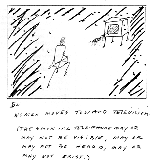
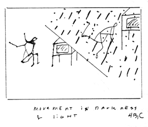
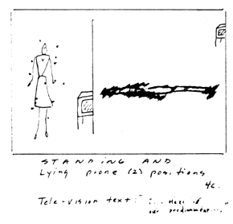
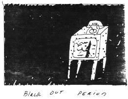

--from
Tele: A Narrative,
a collaboration between Elizabeth Lahey and Meredith Stricker
 [ performance story board ]
[ performance story board ]
.
.
 Working Notes / Movement notes, Elizabeth Lahey:
Working Notes / Movement notes, Elizabeth Lahey:
from Tele, a collaboration with video, text, drawing and dance, first performed at Minor Injuries Gallery, New York, in 1986.
 Tele-; ( [Tele. OHG. Zâla = OE. taél fem. danger, snare, trap] 1. Evil speaking, detraction, calumny. 2. Deceit, enticement, allurement. --Oxford English Dictionary.)
Tele-; ( [Tele. OHG. Zâla = OE. taél fem. danger, snare, trap] 1. Evil speaking, detraction, calumny. 2. Deceit, enticement, allurement. --Oxford English Dictionary.)
 Tele-
began with a dream in which, instead of ringing, a telephone began to "smoke." In the dream, I answered, lifting the receiver thinking it was my friend "Will" calling. The voice on the other end identified itself as "an entity." After giving me a sort of grade card report of my abilities, the voice became garbled with static and a many-tongued incoherency--some part of the message was missing.
Tele-
began with a dream in which, instead of ringing, a telephone began to "smoke." In the dream, I answered, lifting the receiver thinking it was my friend "Will" calling. The voice on the other end identified itself as "an entity." After giving me a sort of grade card report of my abilities, the voice became garbled with static and a many-tongued incoherency--some part of the message was missing.
 Simultaneously, Meredith Stricker had sent me some notes on her research into the Eleusinian mysteries; [". . . then they entered the sacred precinct and the doors of the Telesterion. . . "](1) and ["the initiated must not be informed, but they must receive impressions, and they must be put into a certain attitude of mind, provided it be evident they be prepared for it."] (2) Along with these notes were drawings she had made of what she described as an "Orpheus Box." Here she was sending ideas for boxes on a stage. (The boxes were detailed as "old televisions with mirrors in them and objects such as cones and drawings. . . ."). The term "T.V. obsession" was written on the corner of these sketches.
Simultaneously, Meredith Stricker had sent me some notes on her research into the Eleusinian mysteries; [". . . then they entered the sacred precinct and the doors of the Telesterion. . . "](1) and ["the initiated must not be informed, but they must receive impressions, and they must be put into a certain attitude of mind, provided it be evident they be prepared for it."] (2) Along with these notes were drawings she had made of what she described as an "Orpheus Box." Here she was sending ideas for boxes on a stage. (The boxes were detailed as "old televisions with mirrors in them and objects such as cones and drawings. . . ."). The term "T.V. obsession" was written on the corner of these sketches.
 Acknowledging this powerful X-ing over between us, we began to track down and focus on the narrative cohering in our lives and set the structure for the performance.
Acknowledging this powerful X-ing over between us, we began to track down and focus on the narrative cohering in our lives and set the structure for the performance.



 The movement idea was to create a very singular intimacy--the kind of thought-feeling process which can manifest in any living room where one is alone with a "turned-on t.v." We were dealing with inexplicable atom exchange (static) and translating that signal into a flesh and blood, skin and bone realism, using the body to call attention to and reduce the seductiveness of death. The premise that the television is a nonstop commercial for the safety of nuclear war, by "proving" that the world (body/image) can be taken apart (turned off) and put back together neatly, in less time than it takes to change channels, became the rhythm of the performance--the dialogue between "increasing light" and "black out period." Again from Meredith's original notes: [". . . the fear of death was taken away by the mysteries. . . they affirmed, as did those of Orpheus, that our life is but a death and it is at the death of body that soul becomes free and is born."] (3)
The movement idea was to create a very singular intimacy--the kind of thought-feeling process which can manifest in any living room where one is alone with a "turned-on t.v." We were dealing with inexplicable atom exchange (static) and translating that signal into a flesh and blood, skin and bone realism, using the body to call attention to and reduce the seductiveness of death. The premise that the television is a nonstop commercial for the safety of nuclear war, by "proving" that the world (body/image) can be taken apart (turned off) and put back together neatly, in less time than it takes to change channels, became the rhythm of the performance--the dialogue between "increasing light" and "black out period." Again from Meredith's original notes: [". . . the fear of death was taken away by the mysteries. . . they affirmed, as did those of Orpheus, that our life is but a death and it is at the death of body that soul becomes free and is born."] (3)
 In preparing these notes for HOW(ever),
I returned once more to the O.E.D., where I found in summary, Telesm Gr. [missing text] completion, performance, religious rite; later a consecrated object endowed with a magical virtue to avert evil; from [missing text] to complete, fulfil, perform (rites), officiate (in the mysteries), consecrate, from [missing text] end] = Talisman 1. a statue set up or an object buried under a pillar or the like to preserve the community, house, etc. from danger.
In preparing these notes for HOW(ever),
I returned once more to the O.E.D., where I found in summary, Telesm Gr. [missing text] completion, performance, religious rite; later a consecrated object endowed with a magical virtue to avert evil; from [missing text] to complete, fulfil, perform (rites), officiate (in the mysteries), consecrate, from [missing text] end] = Talisman 1. a statue set up or an object buried under a pillar or the like to preserve the community, house, etc. from danger.
Acknowledgements:
- The Mysteries of Eleusis, George Méautis; Theosophical Publishing House. India, 1932.
- Aristotle (reference not quoted)
-
L'ane Hellénique d'Aprés les Vases Grecs.
Elizabeth Lahey has collaborated on performance and visual/text projects with poet Meredith Stricker (via the U. S. Mail), since 1980. She lives and works in New York City.
go to this issue's table of contents